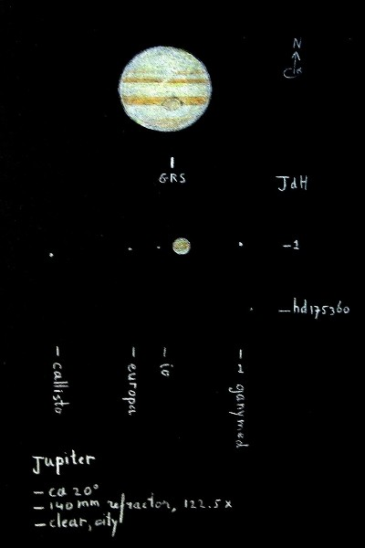

Ik teken graag wat ik door verrekijker of telescoop zie. Zo wordt de herinnering aan de waarneemervaring vastgelegd. De onderstaande schetsen zijn onder de sterrenhemel rechtstreeks met (meestal wit) kleurpotlood op het zwarte papier van een foto-album gemaakt. De cirkelvormige kaders werden van tevoren getekend. De bijschriften zijn later toegevoegd. Nevel-effecten werden bereikt door uitvegen met een propje papier of een wattenstaafje.
|  | |